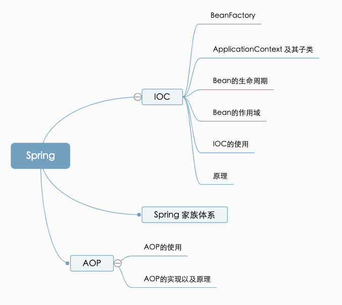

Java Interview Spring

Do you understand the Spring IOC ?
- The core part of the Spring Core
- Eg: How to design a luggage.
- tire <- depend - bottome <- depend - framework <- depend - luggage
High level Part depend Low level part
public class Luggage {
private Framework framework;
Luggage(){
this.framework = new Framework();
}
public void move(){
//... 相关逻辑
}
}
public class Framework {
private Bottom bottom;
Framework(){
this.bottom = new Bottom();
}
}
public class Bottom {
private Tire tire;
Bottom() {
this.tire = new Tire();
}
}
public class Tire{
private int size;
Tire(){
this.size = 20;
}
}
IOC (dependency injection)
-
依赖注入：把底层类作为参数传递给上层类，实现上层类对下层类的“控制”
-
Eg: How to design a luggage.
- luggage <- Injection - framework <- Injection - bottome <- Injection -
The logic of the “getBean()” code
- 转换beanName
- 从缓存中加载实例
- 实例化Bean
- 检测parentBeanFactory
- 初始化依赖的Bean
- 创建Bean
Spring Bean 的作用域
- singleton: Spring的默认作用域，容器里拥有唯一的Bean实例
- prototype: 针对每个getBean请求，容器都会创建一个Bean实例
- request: 会为每个Http请求创建一个Bean实例
- session: 会为每个session创建一个Bean实例
- globalSession: 会为每个全局Http Session创建一个Bean实例，该作用域仅对Portlet有效
Spring Bean的生命周期
- 创建过程
- 实例化bean
- Aware(注入Bean ID, BeanFactory 和 AppCtx)
- BeanPostProcessor(s).postProcessBeforeInitialization
- InitializingBean(s).afterPropertiesSet
- 定制的Bean init方法
- BeanPOstProcessor(s).postProcessAfterInitialization
- Bean初始化完毕
- 销毁过程
- 若实现了DisposableBean接口，则会调用destroy方法
- 若配置了destry-method属性， 则会调用其配置的销毁方法
Do you really understand the Spring autoplay
-
关注点分离：不同的问题交给不同的部分去解决
- 面向切面编程AOP正是此种技术的体现
- 通用化功能代码的实现，对应的就是所谓的切面（Aspect）
- 业务功能代码和切面代码分开后，架构将变得高内聚低耦合
- 确保功能的完整性：切面最终需要被合并到业务中（Weave）
-
AOP的主要名词概念
- Aspect：通用功能的代码实现
- Target：被植入Aspect的对象
- Join Point：可以作为切入点的机会，所有方法都可以作为切入点
- Pointcut：Aspect实际被应用在Join Point，支持正则
- Advice：类里的方法以及这个方法如何植入到目标方法的方式
- Weaving: Aop的实现过程
-
Advice的种类
- 前置通知(Before)
- 后置通知(AfterReturning)
- 异常通知(AfterThrowing)
- 最终通知(After)
- 环绕通知(Around)

- XXXTENTACION - Moon Rock (Prod. NextLane) Anime Music Video